01
Golden Trajectories · Marker
- Seed
- AA-20261106-01-90317
- Series
- Golden Trajectories
- Format
- Landscape · 1400 × 1000
- Additional φ pull
- 97%
- Material
- Marker
- Palette
- primary
Can one number compose a drawing?
18 drawings made on 6 November 2026. Different materials, different compositions, and room to make each one your own.


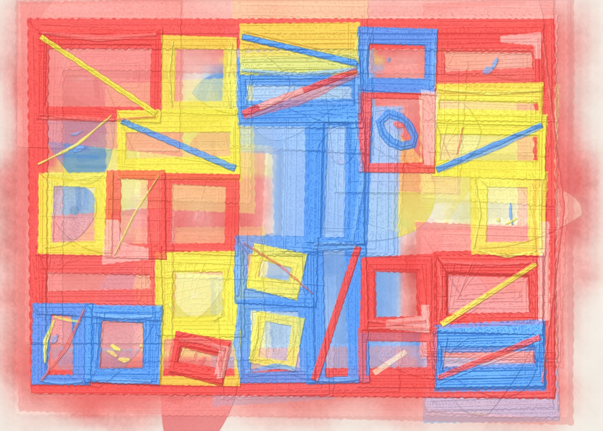
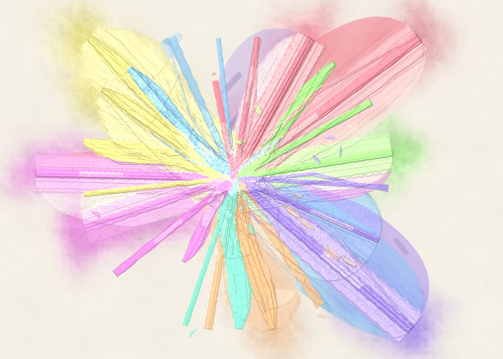
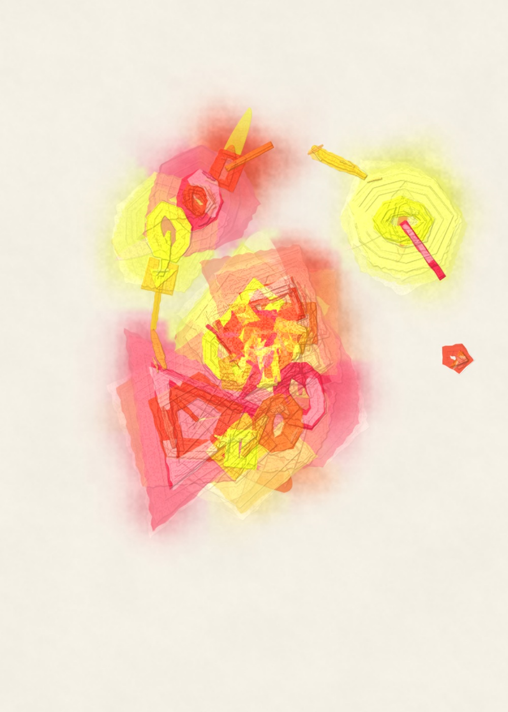
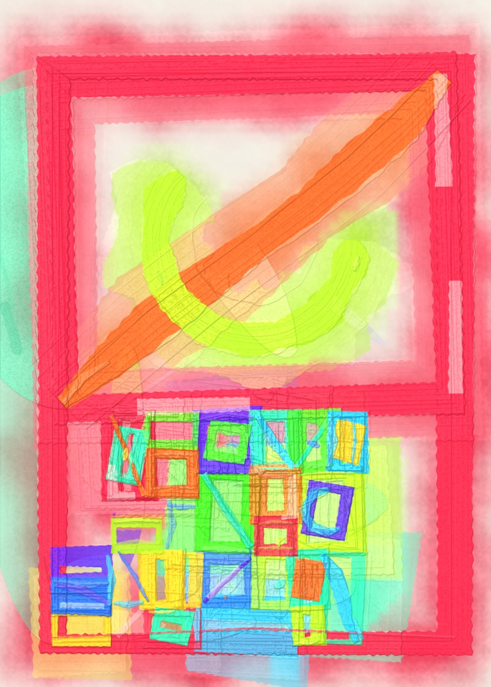
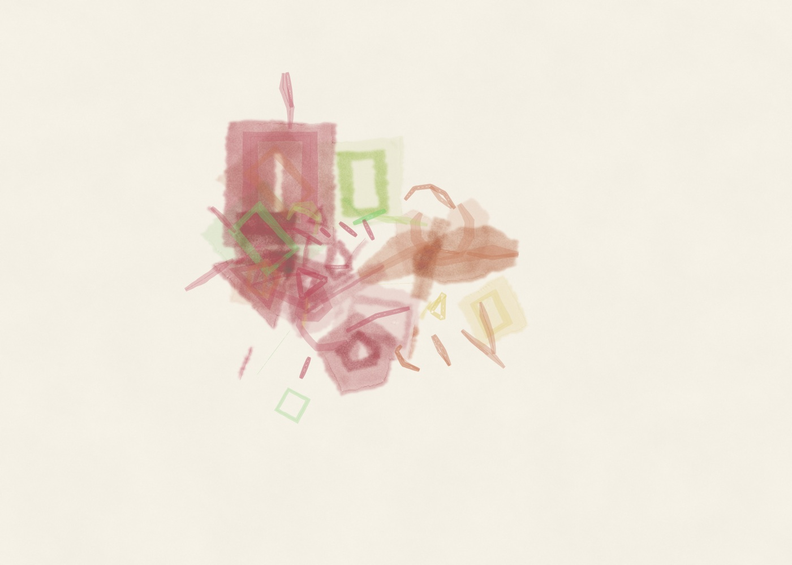
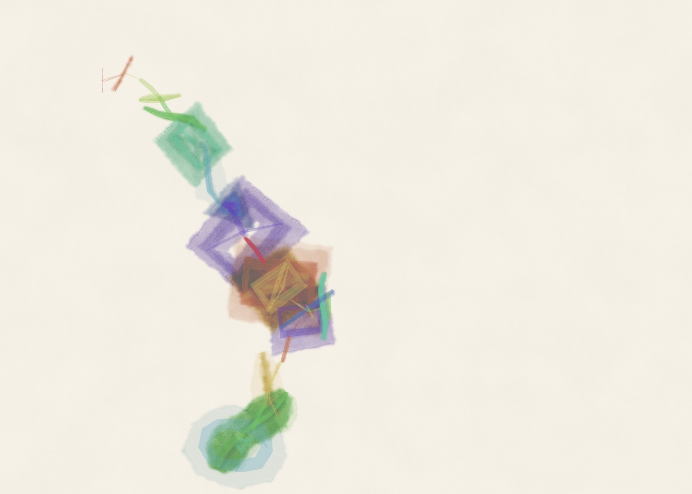
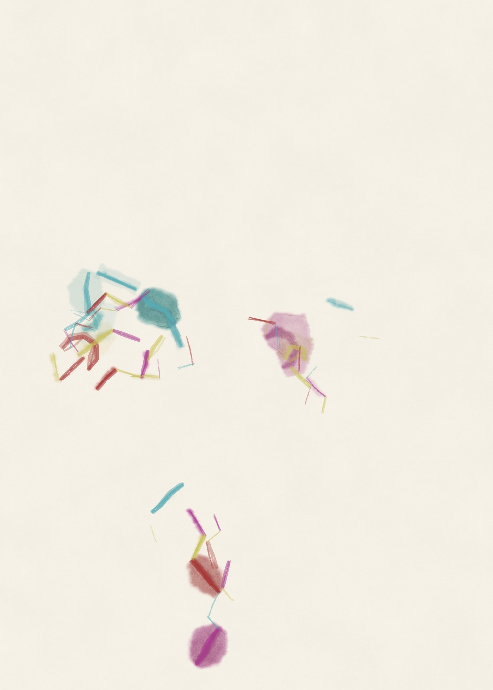
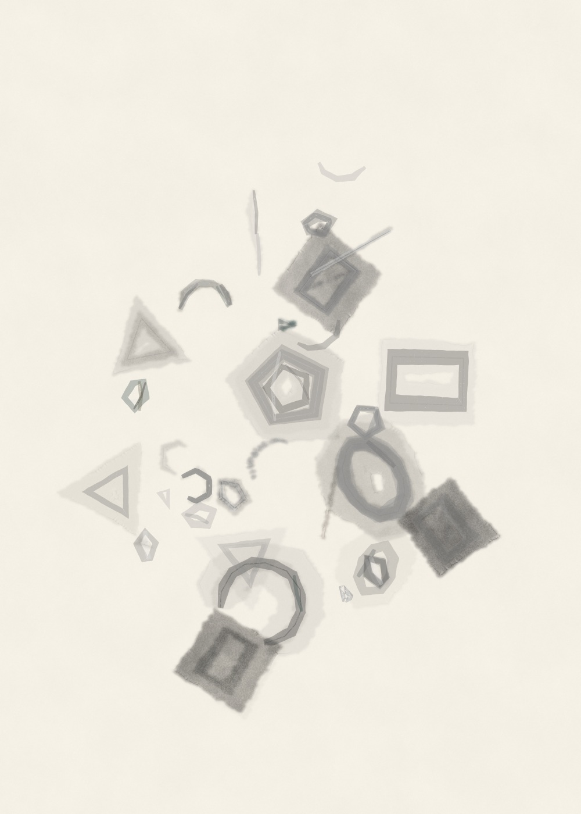
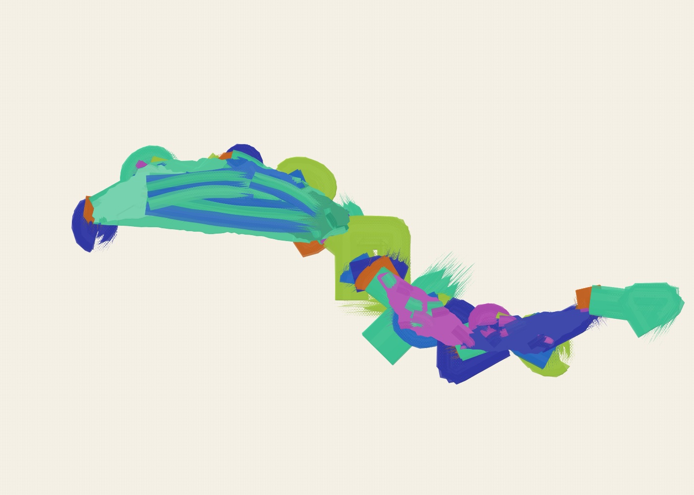
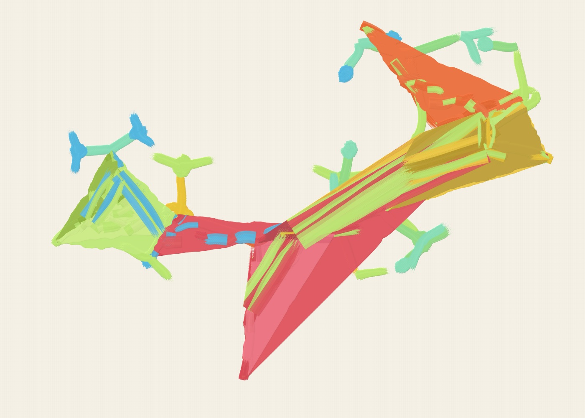
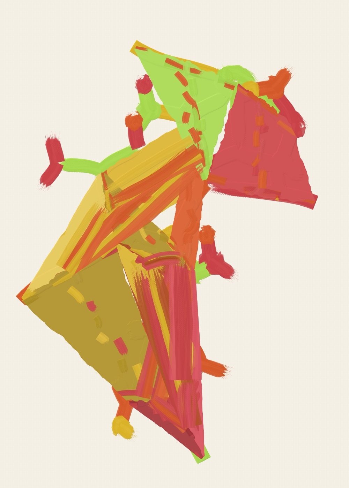
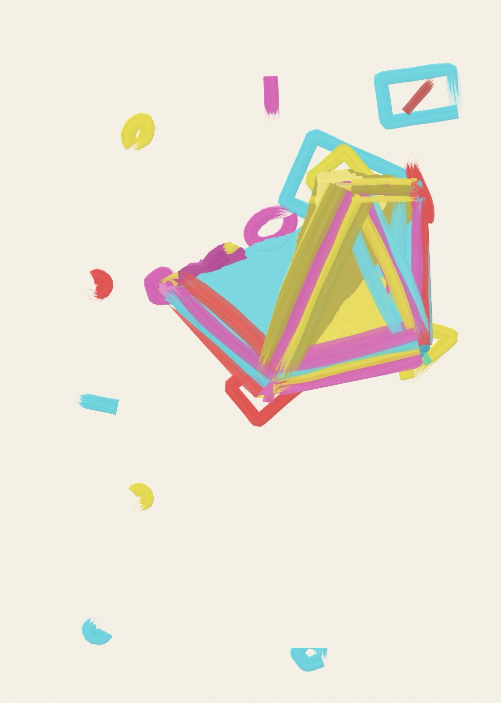
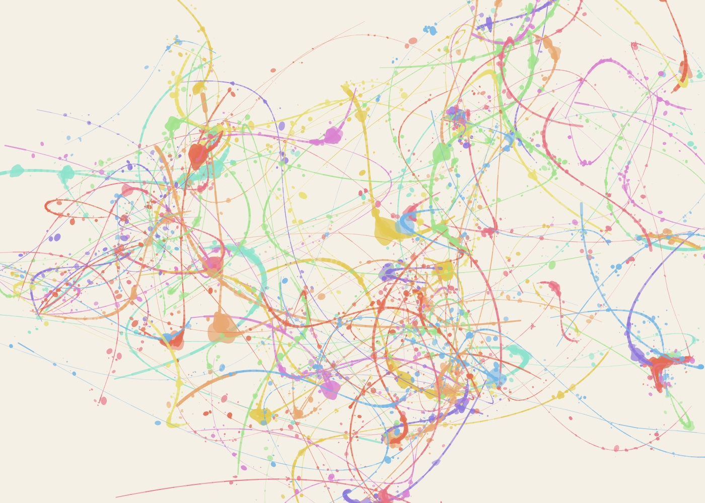
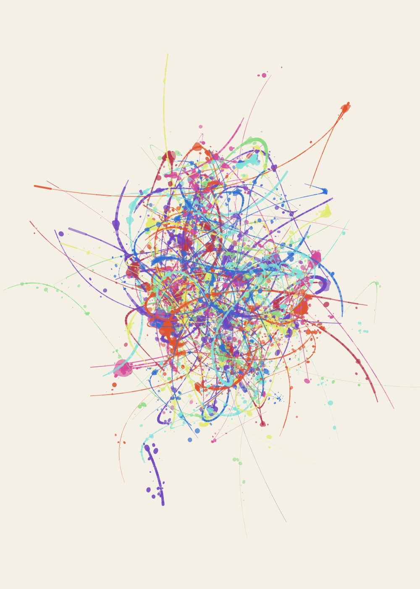
The golden ratio helps arrange each drawing. The material changes how those arrangements feel. Open a piece to see its settings, then change whatever you like.
MAKE YOUR OWN →